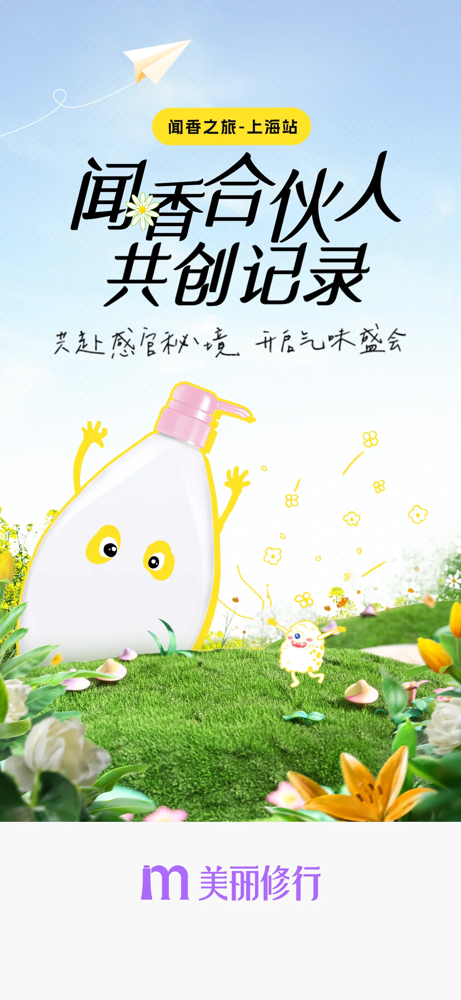
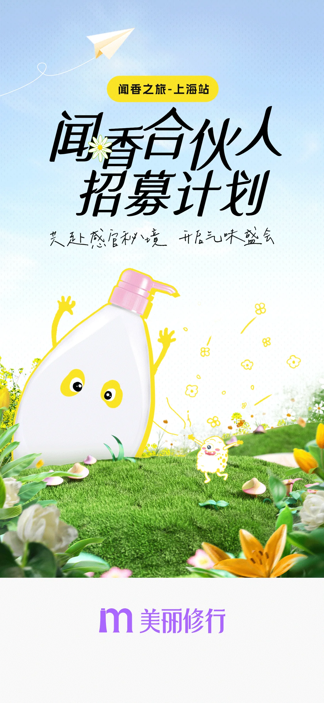
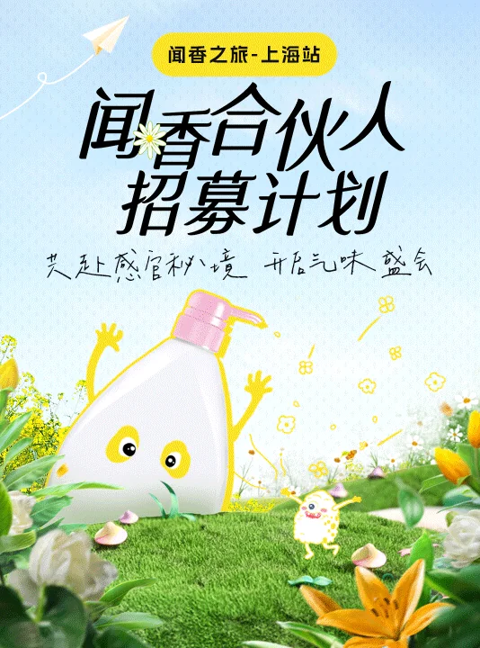
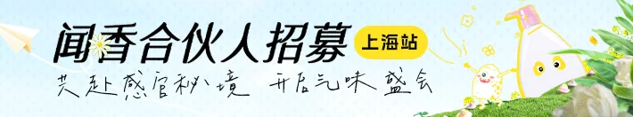
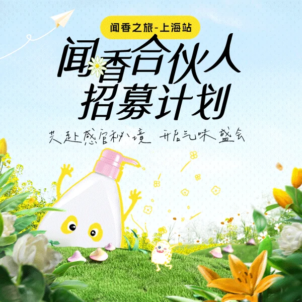

Selected Case / Recruitment Campaign
闻香合伙人
招募计划
围绕“闻香之旅·上海站”发起共创招募，以草地花园、感官香氛与拟人香氛瓶建立活动识别。主视觉延展至开屏、站内信、信息流、个人中心和内容频道配图，串联用户触达与报名入口。

活动路径与交互步骤
01 / 触达至参与招募活动通过站内不同触点把用户带入同一主题：开屏建立第一印象，信息流与站内信补充活动内容，个人中心保留可回访入口，内容频道以配图承接共创记录和广播内容。
开屏触达→阅读活动主题→信息流发现→站内信提醒→个人中心回访→浏览共创内容→参与招募

开屏触达
以大标题、上海站标签和拟人香氛瓶建立活动认知。
共创记录入口
同一视觉系统切换为“共创记录”，承接活动内容回顾和持续传播。

信息流发现
竖版 Banner 在内容流中保留招募主题和场景插画，吸引点击进入活动。

个人中心回访
横向 Banner 用于个人中心入口，帮助用户从常用页面回到招募活动。
视觉系统与内容延展
02 / 场景化识别活动围绕“感官体验”搭建一处可延展的花园场景：浅蓝背景带来轻盈空气感，草地、花朵与香氛瓶表达气味体验，黄色站点标签则在多个尺寸中保持招募主题的识别度。

统一活动场景
花园、香氛瓶和黄色小角色贯穿不同资源尺寸，让用户快速识别同一场招募计划。
站点信息优先
“闻香之旅·上海站”以黄色胶囊标签出现，方便在快速浏览中确认活动地点和主题。
内容模块可延展
共创日历与星际广播使用同一主视觉构图，根据内容频道的阅读场景调整画面比例。
资源位适配
03 / 多触点传播将招募主视觉适配到开屏、信息流、站内信、个人中心与内容频道配图，在横竖不同版式中保留核心标题、场景和活动标签。
项目页按用户从开屏触达、站内发现到内容回访的顺序整理，集中呈现闻香合伙人招募计划的活动图片及资源位适配。